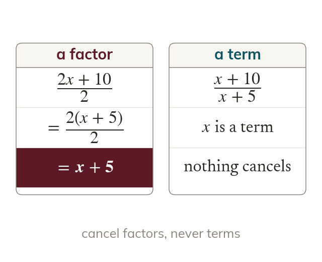
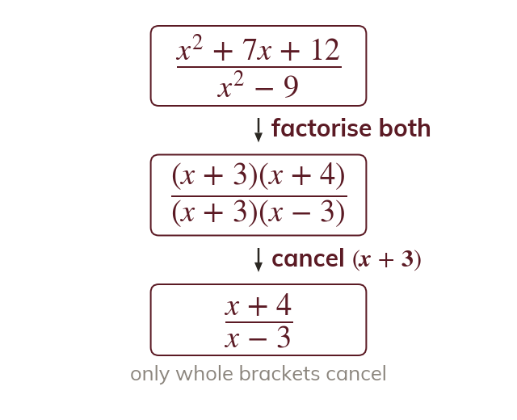
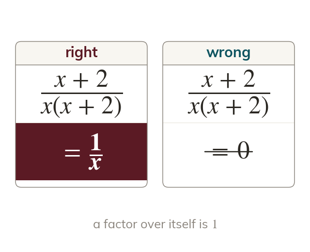
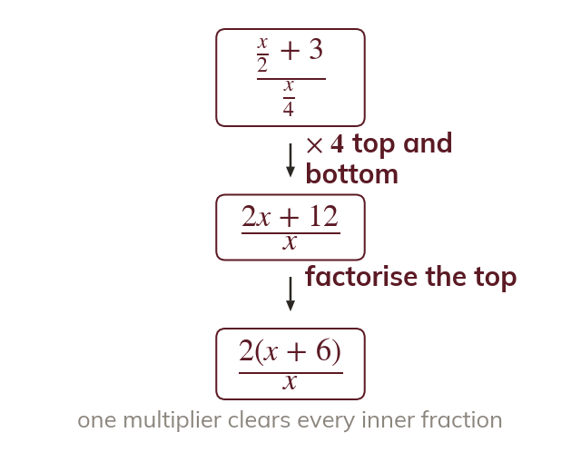
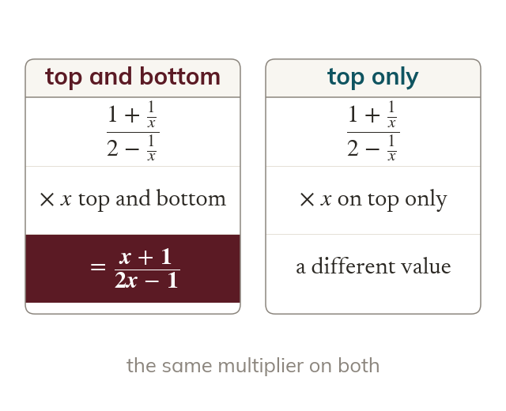

Only factors cancel
A number or bracket cancels only when it is a factor of the whole top and the whole bottom. A term of a sum is not a factor, so it never cancels.
Algebraic fractions simplify exactly as number fractions do: only a factor of the whole top and the whole bottom cancels. Factorising to cancel, and clearing a fraction inside a fraction, are the moves that polynomial division and the factor theorem build on next.
Work down the page at your own pace. Write every answer in your book first, then click to check it.
Read each card, then follow the worked examples one step at a time.

A number or bracket cancels only when it is a factor of the whole top and the whole bottom. A term of a sum is not a factor, so it never cancels.

Factorise the numerator and the denominator fully. Then cancel every bracket or factor they share.

A factor divided by itself is not
When every factor of the top cancels, the numerator is
Pick an answer. If it's wrong, the feedback tells you which mistake it was.
Read each card, then follow the worked examples one step at a time.

A fraction inside a fraction is cleared by multiplying its top and its bottom by the same thing. Choose the lowest common multiple of the inner denominators.

Multiplying the top and the bottom by the same expression leaves the value unchanged. Multiplying only one of them changes it.
Pick an answer. If it's wrong, the feedback tells you which mistake it was.
Finished? Next lesson: 7.2 Dividing Polynomials.
For each skill, tap the one that is true for you today. Your Revise pages start with anything you mark Not yet.
Your ratings are saved on this device only.
Log in, then search for a code to practise that skill.